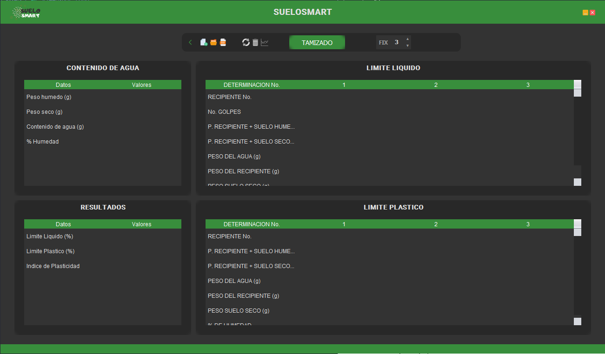

Este manual del usuario describe las funcionalidades del programa y cómo utilizarlas.
Imagen de la interfaz principal:
En esta sección, debe ingresar los siguientes datos:
El contenido de agua (g) y el % de humedad se calcularán automáticamente.
Para realizar los cálculos, ingrese al menos dos determinaciones con los siguientes datos:
Los demás datos serán calculados automáticamente.
En esta sección, no se deben ingresar datos ya que los siguientes resultados serán calculados automáticamente:
Ingrese al menos dos determinaciones con los siguientes datos:
El sistema calculará automáticamente los demás datos, incluyendo el promedio.